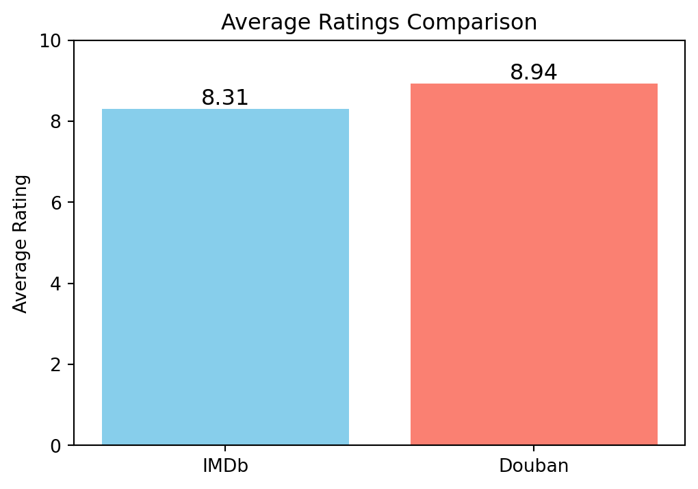
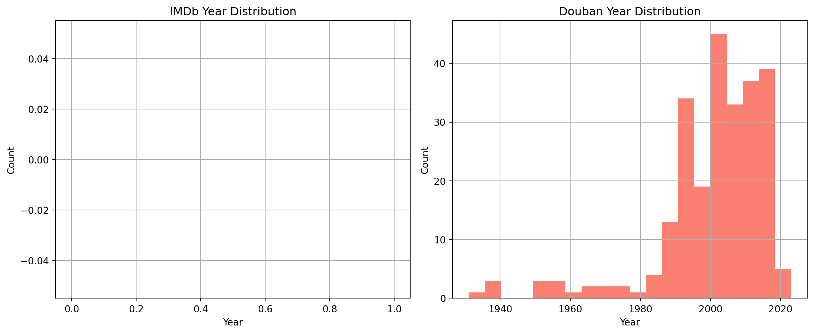
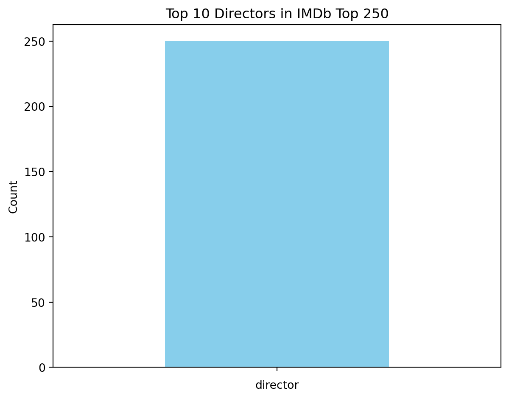

import json
import requests
from bs4 import BeautifulSoup
import pandas as pd
# 获取IMDb Top 250数据
url_imdb = "https://www.imdb.com/chart/top/?ref_=nv_mv_250"
headers_imdb = {
"User-Agent": ("Mozilla/5.0 (Windows NT 10.0; Win64; x64) "
"AppleWebKit/537.36 (KHTML, like Gecko) "
"Chrome/91.0.4472.124 Safari/537.36")
}
response_imdb = requests.get(url_imdb, headers=headers_imdb)
soup_imdb = BeautifulSoup(response_imdb.text, "html.parser")
script_imdb = soup_imdb.select_one("script[type='application/ld+json']")
data_imdb = json.loads(script_imdb.text)
imdb_movies = []
for movie in data_imdb["itemListElement"]:
item = movie["item"]
rating = None
if "aggregateRating" in item and "ratingValue" in item["aggregateRating"]:
rating = item["aggregateRating"]["ratingValue"]
# IMDb的结构化数据中也可以获取到上映年份、导演和类型
# 这里简单示范，只获取必须数据，后续需要可拓展。
# item中包含datePublished、genre、director等字段
imdb_movies.append({
"title": item.get("name"), # 英文片名
"rating": rating,
"year": item.get("datePublished", ""),
"genre": "|".join(item.get("genre", [])) if "genre" in item else "",
"director": "|".join([d["name"] for d in item.get("director", [])]) if "director" in item else ""
})
df_imdb = pd.DataFrame(imdb_movies)
df_imdb.to_csv('imdb_top250.csv', index=False)Practice3-4
Practice 3.1
The following Python code demonstrates how to scrape IMDb’s Top 250 movie data using requests, BeautifulSoup, and save the results to a CSV file.
4.1 - q1_Compare Average Ratings
The following Python code compares the average ratings of IMDb and Douban’s Top 250 movies and visualizes the comparison using a bar chart.
import pandas as pd
import matplotlib.pyplot as plt
# Load data
df_imdb = pd.read_csv('imdb_top250.csv')
df_douban = pd.read_csv('douban_top250.csv')
# Convert ratings to numeric
df_imdb['rating'] = pd.to_numeric(df_imdb['rating'], errors='coerce')
df_douban['rating'] = pd.to_numeric(df_douban['rating'], errors='coerce')
# Calculate average ratings
avg_imdb = df_imdb['rating'].mean()
avg_douban = df_douban['rating'].mean()
# Print average ratings
print("IMDb Average Rating:", avg_imdb)
print("Douban Average Rating:", avg_douban)
# Prepare data for visualization
platforms = ['IMDb', 'Douban']
avg_ratings = [avg_imdb, avg_douban]
# Create bar chart
plt.figure(figsize=(6, 4))
plt.bar(platforms, avg_ratings, color=['skyblue', 'salmon'])
plt.title('Average Ratings Comparison')
plt.ylabel('Average Rating')
plt.ylim(0, 10)
for i, v in enumerate(avg_ratings):
plt.text(i, v + 0.1, f'{v:.2f}', ha='center', fontsize=12)
plt.show()IMDb Average Rating: 8.31
Douban Average Rating: 8.9388
4.2 - q2-Find Overlapping Movies
The following Python code identifies movies that appear in both IMDb’s and Douban’s Top 250 lists based on their English titles.
import pandas as pd
# Load data
df_imdb = pd.read_csv('imdb_top250.csv')
df_douban = pd.read_csv('douban_top250.csv')
# Extract and clean movie titles
df_imdb_titles = set(df_imdb['title'].dropna().str.strip())
df_douban_titles = set(df_douban['en_title'].dropna().str.strip())
# Find common titles
common_titles = df_imdb_titles.intersection(df_douban_titles)
# Output results
print("Movies that appear in both IMDb and Douban Top 250 lists (matched by English titles):")
if common_titles:
for title in sorted(common_titles):
print(title)
else:
print("No overlapping movies found.")Movies that appear in both IMDb and Douban Top 250 lists (matched by English titles):
No overlapping movies found.4.3 - q3-Release Year Distribution
The following Python code visualizes the release year distribution of movies in IMDb’s and Douban’s Top 250 lists using histograms.
import pandas as pd
import matplotlib.pyplot as plt
# Load data
df_imdb = pd.read_csv('imdb_top250.csv')
df_douban = pd.read_csv('douban_top250.csv')
# Convert year column to numeric, cleaning any non-numeric values
df_imdb['year'] = pd.to_numeric(df_imdb['year'], errors='coerce')
df_douban['year'] = pd.to_numeric(df_douban['year'], errors='coerce')
# Plot release year distributions
plt.figure(figsize=(12, 5))
plt.subplot(1, 2, 1)
df_imdb['year'].dropna().hist(bins=20, color='skyblue')
plt.title('IMDb Year Distribution')
plt.xlabel('Year')
plt.ylabel('Count')
plt.subplot(1, 2, 2)
df_douban['year'].dropna().hist(bins=20, color='salmon')
plt.title('Douban Year Distribution')
plt.xlabel('Year')
plt.ylabel('Count')
plt.tight_layout()
plt.show()
4.4 - q4-Genre Distribution
The following Python code visualizes the top 10 genres for movies in IMDb’s and Douban’s Top 250 lists using bar charts.
import pandas as pd
import matplotlib.pyplot as plt
df_imdb = pd.read_csv('imdb_top250.csv')
df_douban = pd.read_csv('douban_top250.csv')
# 假设两个DataFrame的director字段类似IMDb，使用"|"分隔多个导演
df_imdb['director'] = df_imdb['director'].fillna('')
imdb_directors = df_imdb['director'].str.split('|').explode().str.strip()
imdb_director_counts = imdb_directors.value_counts()
# 绘制各平台导演出现次数Top10
top_imdb_directors = imdb_director_counts.head(10)
plt.figure(figsize=(12,5))
plt.subplot(1,2,1)
top_imdb_directors.plot(kind='bar', color='skyblue')
plt.title('Top 10 Directors in IMDb Top 250')
plt.ylabel('Count')
plt.tight_layout()
plt.show()